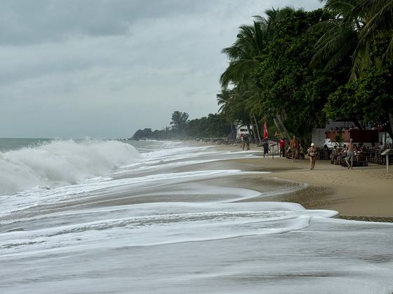

Things to Do in Koh Samui
I've lived on Samui for three years, and this is roughly what I tell friends before they arrive. It isn't ranked by what photographs best — it's what I'd actually spend a day on. A few of these are famous for good reason. A few are twenty minutes off the main road and empty on a Tuesday.
What there actually is to do here
Grouped the way I'd think about a week, rather than as a ranked top ten.
Beaches, and why they're not interchangeable
Coming from Europe I assumed a beach was a beach. Here they have completely different personalities depending on the coast, and the coast you want changes with the season. In winter the east side gets wavy — properly choppy on the worst days — while the west stays calm and flat. In summer it flips: the west can go so shallow at low tide that there's barely any water to swim in, so the east is the better bet. Nobody tells you this before you book, and it's the difference between swimming every day and looking at the sea. Beyond that, some are long and soft and busy; others are boulder-strewn coves you reach down a track with no sign on it. Pick by what you want from the day, not by whichever is closest to the hotel.

Viewpoints and temples
The temples are working places, not attractions with opening hours, and they're free. Dress properly: shoulders and knees covered for everyone, no beachwear, and shoes off where you're asked. Nobody will be rude to you about it, but turning up in a bikini top is disrespectful and you'll feel it. I keep a light scarf in the scooter for exactly this. Go early too — by eleven the heat sits on you and the light goes flat. The viewpoints are mostly a short, steep ride up from the ring road, and the ones people queue for are rarely the best ones.
Night markets
This is where I'd send anyone on their first evening. Every area has its own night market on its own night, and they're genuinely different from each other — some are food-first, some are half souvenir stalls, one or two are almost entirely locals. Eat standing up. Bring small notes.
Waterfalls
Worth managing expectations on, because timing is everything. Go after heavy rain and they're loud and full and genuinely impressive. In the dry season the same waterfall can be almost empty — a trickle over rock, and you'll have ridden forty minutes for a puddle. If it hasn't rained in a while, save it for another day. Ask someone who was there that week; this is exactly the kind of thing I post about.
Beach clubs
A whole category that barely exists in Europe in this form: day beds, a pool, music, and a minimum spend instead of an entry fee. Some are excellent value for a full day out of the sun. Some charge Ibiza prices for a mediocre sandwich. They also change hands often, so recommendations date quickly.
Days out and experiences
The island trips, the snorkelling, the cooking classes, the elephants, the things you book once and remember. This is where I'd spend the money — not on the hotel. A quiet day on the water off Samui is the thing people tell me about months later.
What's in the guide
Rather than a single ranked list, the free guide collects spots for different tastes — beaches and viewpoints, temples, night markets, waterfalls, beach clubs, shopping, and the day trips and experiences worth booking. Whether you want a busy week or one where nothing happens, there's something in there for it.
All of this in one PDF you can use offline.
Eight pages, 300+ places, no email needed. Save it to your phone before you fly — signal on the island is fine, but not everywhere.